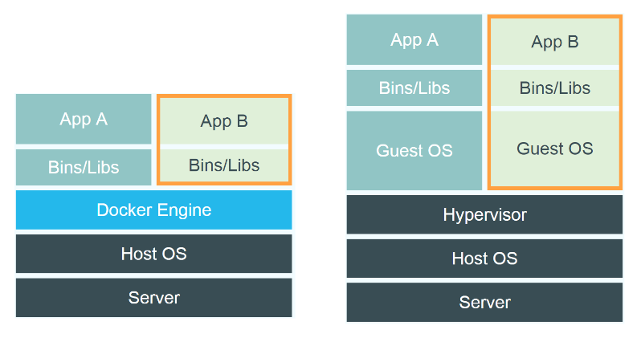
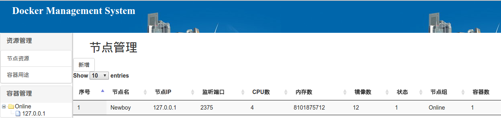

图2-7 容器生命周期控制
本章主要介绍容器的基本原理。在了解基础原理，并且对容器有一些认识之后，掌握容器相关的一些基本操作。
容器技术是轻量级虚拟化技术。利用该技术能够将应用打包发布到不同的容器化服务器上运行。在此过程中，可以减少繁琐的应用环境构建，大大加快从源码到应用上线的过程。
容器技术最近很火，是各大公司争先使用的技术，首先整体来看容器是什么。
图1-1 容器及其ID
从图1-1可以看出，运行了一个容器，而且这个容器中运行的父进程的ID为2483。
图1-2 容器ID及其父子进程
从图1-2中可以看出，容器2483进程的父进程是2243，是以daemon运行的docker engine。同时它还派生了一个子进程2494。
通过上面的介绍可以得到一个简单的概念：容器是受到资源限制的进程及其子进程。
这是从微观上来看容器的定义，从操作系统宏观上来看容器所处的位置则是图1-3
图1-3 容器层次
图13中实际是包含容器A和容器B，每个容器都包含了Bins或Libs（必要的保证应用运行的库文件）。而容器之下是Docker Engine，保证每个容器都运行在独立的名字空间中。其中还存在另外一个概念：容器镜像，App+Bins/Libs 构成容器的镜像。这个是在容器运行前的一种状态。当然，容器在运行时也可以添加参数，实际运行比现在复杂。
因为大家对虚拟机比较熟悉，做一个容器跟虚拟机在操作系统上所处层次的对比：

图 1-4 容器 vs VM层次对比
从图1-4中可以看出，虚拟机比容器多一层Guest OS层，这样是容器能够快速启停，性能上比虚拟机好的一个因素。
Docker组成
图1-5 registry、image和container的关系
从图1-5上可以很清楚看到registry、image和container三者之间的关系。而且registry、image和container三个组件构成了整个容器工具栈，实现了迭代打包镜像，镜像推送发布，对象快速部署的功能，使得对于应用的持续集成发布成为可能。
本节参考
-
http://dockone.io/article/76
-
http://coolshell.cn/articles/17010.html
-
http://coolshell.cn/articles/17029.html
Ubuntu 14.04 版本系统中自带了Docker二进制包，可以直接安装
$ sudo apt-get update
$ sudo apt-get install -y docker.io
$ sudo ln -sf /usr/bin/docker.io /usr/local/bin/docker
$ sudo sed -i '$acomplete -F _docker docker' /etc/bash_completion.d/docker.io
目前从Ubuntu官方系统带的二进制包比较老是1.6.2版本，有些新特性不一定能够使用到，稳定性上也存在一些问题，建议安装最新版容器技术包。
从Docker官方源安装
$ sudo apt-get install apt-transport-https
$ sudo apt-key adv --keyserver hkp://keyserver.ubuntu.com:80 --recv-keys 36A1D7869245C8950F966E92D857
$ sudo bash -c "echo deb https://get.docker.io/ubuntu docker main" > /etc/apt/sources.list.d/docker.li
$ sudo apt-get update
$ sudo apt-get install lxc-docker
或者采用Docker官方使用的安装脚本
# curl -sSL https://get.docker.com/ |sh
当前的最新版本是1.2.0，可以使用到Docker 的很多新特性，方便我们的快速上手和开发使用。
在实际操作容器时，需要明确三个概念：
类比虚拟机机中镜像，但是比虚拟机镜像要轻量很多，容器镜像只需要libs+app就行。对于特定的app，只需要此app使用的动态库即可，通常镜像只有几百兆。
镜像是容器在没有运行时的一种状态，镜像制作可以遵循Docker官方的DockerFile语法进行。
图1-6 容器镜像
从图1-6中可以看到镜像的几个属性，repository、tag、image ID、created、size。利用这些信息可以很好的区分不同的镜像，有利于发布不同的应用。
容器是镜像在运行时的一种状态。镜像在打包好之后，放到镜像库中，当需要运行时，采用Docker的特定指令加上一些额外的参数就能够运行起来。镜像一旦运行起来就进入容器状态。
在容器状态，存在生命周期管理的概念。容器可以start，stop，restart和destroy。
图1-7 容器
图1-7显示了一个正在运行的容器。
存储镜像有两种方式，一是本地镜像存储，二是中心库存储。当使用Dockerfile制作好镜像后，存储在本地镜像库中。之后可以将本地镜像库中的镜像推送到远程中心仓库中存储。同理，可以从中心仓库拉取镜像到本地仓库。实现镜像的制作，存储，分发。
Docker有官方镜像库，也允许在使用Docker的公司或者个人搭建私用仓库。可以利用发布的registry代码搭建私有中心仓库，存储私有镜像。
图1-8 镜像库
图1-8显示了自建的私有仓库信息。可以查看到每个使用的镜像，以及镜像的tag（版本）信息。
显示所有镜像
docker images
查询镜像
docker search ubuntu:14.04
拉取镜像
docker pull ubuntu:14.04
推送镜像到库中
docker push
删除镜像
docker rmi
制作镜像
docker build
需要编写Dockerfile文件，虽然比较简单，需要另外讲解。
获取帮助
docker --help
展示所有镜像
docker images
运行镜像
docker run
显示所有容器
docker ps
显示容器详细信息
docker inspect containerid
停止容器
docker stop containerid
开启容器
docker start containerid
删除容器
docker rm -f containerid
本章主要介绍容器管理系统要使用到的接口、管理系统概要设计和详细设计。通过本章的学习将认识到管理系统的重要性，也将了解到怎样设计这个管理系统。
容器使用的不同阶段：
手工阶段：全部靠手工来启停创建容器。对于单个应用来说没有问题，简单的一行命令就能够操作容器。（例如：用容器启动一个nginx服务）
半自动阶段：对于大量需要部署的应用。编写大量的脚本来编排容器，完成比较复杂的应用的发布。只需要编写相对复杂的脚本就能够完成工作。（例如：使用容器部署nginx和java服务）
规模阶段：一次对多个节点（3个以上服务器节点）进行应用高可用部署。需要在编写编排脚本的基础上，运用自动化工具来推送容器镜像，管理容器的启停。（例如：部署10套nginx和java服务）
自动化规模阶段：大规模阶段，需要有大的管理系统来管理整个集群的应用部署，而且能够同时对多个应用操作。管理的容器达到几百上千。（例如：部署多个应用的多套nginx和java服务）
最终目的：将日常大量的手工工作自动化，最大的节约人力成本。将有限的人力放置在更加广阔的服务上。
容器管理系统由前端页面、后端操作和数据库表组成，即所谓的view、control和model。
图2-1 整体架构图
从图2-1中可以看出，用户跟UI做交互，所有动作都会到Handler做过滤，在handler阶段对各个url做解释，调用MySwarm或者Docker-py，将操作最终落地到被管理的各个Docker engine上。从而实现容器的生命管理操作。
图2-1中没有加入调度模块，不能够实现程序资源的自动分配，而是由管理者根据资源统计情况人工调度。这是该系统需要进一步演化的一个重点。
如果需要添加资源自动调度模块，只需要在MySwarm层做进一步开发Scheduler即可。资源调度和管理是容器管理中相对比较核心和困难的地方，可以参考社区Mesos和Marathon方案。当前，已经有比较成熟的解决方案。
图2-2 登录界面
图2-2是从Bootstrap上获取的登录界面，简单实用。在登录界面主要实现对用户的认证和权限控制。用户认证解决是否可以访问该平台；权限控制解决可以访问该平台的那些部分。用户登录需要跟数据库做交互，有数据库表需求。
用户表有四个字段：id、name、password、user_group。id为关键字int型，name、password和user_group都是字符串字段。
管理界面采用左右分栏方式，左边为管理栏，右边为展示栏，比较符合实际管理操作系统的风格。

图2-3 管理界面
图2-3 管理界面上分为两个部分，上部分为资源管理，下部分为容器生命周期的实际操作。
容器节点管理主要是需要管理的节点做增加和删除操作，添加到管理系统中的节点，其节点上的容器就添加到了管理系统中。
图2-4 节点管理
节点管理中有增加和删除节点操作，需要在后面的开发中添加功能。
由管理系统创建的容器，需要对使用情况做记录，该部分即是完成这部分工作，保证容器用途和使用人可查。
图2-5 容器用途管理
容器生命周期管理包括容器的创建、启动、停止、删除四个操作，这是整个管理系统中的核心部分。
图2-6 容器创建
图2-7 容器生命周期控制
图2-6是容器的创建部分，主要用来设置容器创建过程中的各个系统资源参数。图2-7是对创建后的容器的操作，包括启动、停止、重启和销毁。
实战 展示管理系统
Docker 的官方Python接口是用python编写的，对容器操作命令做了封装后的接口。本质还是Docker engine的Restful接口的调用。只是用Python封装后，操作起来更加方面简洁。
可以采用源码安装，
wget https://github.com/docker/docker-py/archive/1.8.1.zip
cd 1.8.1
python setup.py
也可以使用pip install来安装
pip install dokcer-py
安装后，直接使用import命令即可使用
import docker
引入Docker模块之后，就可以利用Docker模块提供的方法。
实战 利用python api创建容器
import docker
client_ins = docker.Client(base_url='tcp://127.0.0.1:2375', version='1.20', timeout=10)
print (" Create the container......")
container_ret = client_ins.create_container(image=conf['Image'],
stdin_open=conf['OpenStdin'],
tty=conf['Tty'],
command=conf['Cmd'],
name=conf['Name'],
hostname=conf['Hostname'],
host_config=conf['HostConfig'])
以上代码中可以看出，引入Docker模块之后，需要初始化Client对象，然后可以调用Client对象中的方法。
这些方法跟Docker cli的方法相差不大，包括我们要用到的各种方法。
增加各个方法的详细解释（或者将不用到的删掉，详细的介绍要使用的方法）
docker ps 功能，列举所有的容器
containers(self, quiet=False, all=False, trunc=False,
latest=False, since=None, before=None, limit=-1,
size=False, filters=None)
docker cp 功能，从容器中拷贝数据
copy(self, resource_id=None, *args, **kwargs)
创建容器，之后可以使用start命令启动容器
create_container(self, image, command=None, hostname=None,
user=None, detach=False,
stdin_open=False,tty=False,mem_limit=None,
ports=None, environment=None,
dns=None,volumes=None,volumes_from=None,
network_disabled=False, name=None,
entrypoint=None,cpu_shares=None,working_dir=None,
domainname=None, memswap_limit=None,
cpuset=None,host_config=None,mac_address=None,
labels=None, volume_driver=None, stop_signal=None,
networking_config=None)
重启容器
restart(self, resource_id=None, *args, **kwargs)
启动容器
start(self, resource_id=None, *args, **kwargs)
查看容器运行数据
stats(self, *args, **kwargs)
停止容器
stop(self, resource_id=None, *args, **kwargs)
展示容器中运行的进程
top(self, resource_id=None, *args, **kwargs)
启动容器中所有的进程
unpause(self, resource_id=None, *args, **kwargs)
更新容器配置
update_container(self, *args, **kwargs)
阻塞直到容器停止，进入exit状态
wait(self, resource_id=None, *args, **kwargs)
具体可以上https://docker-py.readthedocs.io/en/latest/api/查看各个方法的介绍。
以上代码块中的方法，基本都是比较常用的方法，对Docker的开发有很大的帮助。
另外，有些性能或者监控相关的数据，在Docker官方提供的接口中并没有很好的实现，需要我们直接从Docker engine中获取数据，此时就可以使用Docker engine提供的原生Restful接口了。
如以下代码：
def _container_list_more(self, node_ip, node_port, containers_id):
url = ('http://' + node_ip + ":" + node_port + "/containers/" +
containers_id + "/json")
container_more_url = Curl(url)
ret_json = container_more_url.get_value()
return ret_json
以上代码块用来获得某个节点上的容器的详细信息。该方法没有调用Docker 的python接口，而是直接从Docker engine获取。
关于docker engine提供的restful 接口可以参考官方文档。
实战 操作docker engine的restful接口
图2-8 docker restful接口
图2-8是利用docker engine restful来查看其中一个被管理节点的信息。返回的全部为json格式数据，可以方便之后的操作。
选择tornado作为管理系统的Web框架。跟Django比起来，tornado更加简单，灵活性也更大。
tornado有两种安装方式：
pip install tornado
或者采用ubuntu内部工具apt-get来安装：
apt-get install python-tornado
前端使用jquery和bootstrap框架，样式和表格等全部采用bootstrap风格，比较适合当前流行色，同时也能够自适应手机模式，方便在手机上操作容器。
后端数据库采用mysql，数据库表一共有四个，分别是节点表、IP资源表、容器用途表和用户表。
四个表的设计如下：
详细的介绍每个表字段。
节点表
class NodeDB(Base):
__tablename__ = 'node'
id = Column(Integer, primary_key=True) //自增关键字
name = Column(String(32)) //节点的hostname
ip = Column(String(32)) //节点IP地址
port = Column(String(32)) //节点的管理端口
cpus = Column(String(32)) //节点CPU个数
mem = Column(String(32)) //节点内存数
images = Column(String(32)) //节点上的镜像数
state = Column(String(32)) //节点状态
node_group = Column(String(32)) //节点所在的组
containers = Column(String(32)) //节点上的容器数
os_version = Column(String(32)) //节点操作系统版本
kernel_version = Column(String(32)) //节点内核版本
docker_version = Column(String(32)) //节点上Docker engine版本
容器用途表
class ConUsageDB(Base):
__tablename__ = 'con_usage'
id = Column(Integer, primary_key=True) //自增关键字
con_id = Column(String(64)) //容器ID
con_addr = Column(String(32)) //容器IP地址
node_ip = Column(String(32)) //容器所在节点IP
user_name = Column(String(32)) //容器用户名
con_app = Column(String(32)) //容器上运行app
con_desc = Column(String(256)) //容器其他描述
用户表
class UserDB(Base):
__tablename__ = 'user'
id = Column(Integer, primary_key=True) //自增关键字
name = Column(String(32)) //用户名
password = Column(String(64)) //用户密码
user_group = Column(String(32)) //用户所在组
节点表、容器用途表和用户表组成整个管理系统的数据库表。对这三个表的操作，构成整个系统的40%功能，剩下的数据展示和操作是管理系统直接对节点操作完成。
本章详细的介绍系统的实际编码过程。
初步使用Pycharm作为python开发的IDE环境，目前有付费版和社区版，都能够提高开发效率。同时结合python的虚拟环境，对系统自由环境影响较小，也能够快速重建开发环境。
代码初步采用MVC架构，分为handlers，model，static，templates 4个目录，4个目录的功能分别如下：
容器环境采用已经做好的虚拟机镜像的方式发送，简化大家安装容器，下载镜像的操作，快速构建开发对应的应用环境。在实际生产中，这部分工作可以由系统工程师来完成。虚拟化环境软件为virtualbox，可以根据官网来安装。虚拟机为ubuntu server 14.04 lts版本，具有很好的稳定性和易用性。容器版本为最新的1.11版，docker在1.9版本后并没有发行2.0版，而是采用了1.10版，预示着1.x将是长期版本。
用户管理主要使用了tornado的安全认证方式。不仅解决了权限的控制，而且节约了大量的认证开发的时间。
整体访问流程如下：
User--------> '/'(已经认证)--------->WelcomeHandler(展示欢迎页面)
|
|
没有认证或cookie超时------->login(登录页面登录)
从流程图上可以看见，tornado的认证系统主要是使用cookie来识别用户和做安全保护。当用户首次登录页面或者用户cookie过期后，将需要重新登录系统。
整个过程中涉及到的方法和函数有：
import tornado.web
class BaseHandler(tornado.web.RequestHandler):
def get_current_user(self):
return self.get_secure_cookie("username")
class LoginHandler(BaseHandler):
def get(self):
self.render('login.html')
def post(self):
self.set_secure_cookie("username", self.get_argument("username"))
self.redirect("/")
//调用tornado.web.authenticated装饰器来完成认证，保证在做get方法的时候先验证用户的cookie
class WelcomeHandler(BaseHandler):
@tornado.web.authenticated
def get(self):
self.render('index.html', user=self.current_user)
class LogoutHandler(BaseHandler):
def get(self):
if (self.get_argument("logout", None)):
self.clear_cookie("username")
self.redirect("/")
跟url相关的代码：
application = tornado.web.Application([
(r'/', WelcomeHandler),
(r'/login', LoginHandler),
(r'/logout', LogoutHandler)
实战：利用tornado的安全认证来编写登录
整个编码过程以tornado框架为基础，实际展示
节点管理的整个流程图：
图3-1 节点管理的整个流程图
这部分功能放到myswarm.py单独的模块中实现，在之后的很多操作中都要用到，便于重用。
涉及到几个关键点
检查添加节点是否有效并且刷新数据库信息
使用多线程来后台刷新节点信息，并且将节点信息写入数据库，保证页面能够快速返回数据
节点添加-------->采集节点信息---->update DB------->展示节点信息
采集节点信息后，需要将所有信息update到数据库中，然后从数据库中获得节点信息展示给前端页面。这样流程上保证每次都能够获得节点的最新信息，特别实在节点镜像和容器数得到更新后。
采集节点信息-------->update DB--------->展示节点-------->删除节点--------->删除成功
删除节点时，首先是对节点信息刷新，然后利用提供的删除按钮删除节点。
此外，管理系统在登录时会自动刷新节点信息，保证每次登录到系统后看到最新的节点统计信息（包括节点是否可以接通，节点上的镜像数，节点上容器数）
实战：编写节点操作代码
容器创建启动的整个流程：
图3-2 容器创建启动
图3-2中简单的展示了容器创建和启动2个过程，首先容器的创建，之后是容器的启动。创建的过程中需要传输一定限定参数，而启动则是直接从创建完成的容器开始的。
容器在创建过程中，首先选择容器的规格，包括容器的CPU、内存、运行命令和容器镜像选择。
CPU值： 包括CPU时间，CPU配额，CPU相对值
CPU时间： 相对值，基准值
CPU配额： CPU时间的倍数，表示在基准时间上的时间数，用来表示逻辑CPU核数
CPU相对值： CPU出现竞争时占用CPU的比例
内存大小： 容器占用内存的上限
运行命令： 容器启动时运行的命令
容器镜像： 运行时基准镜像
选择了以上这些值之后，将这些参数传递到后台进行处理。创建容器的过程如下：
user--------handler--------myswarm----------docker engine
用户发送容器创建的参数给容器engine，容器engine拿到了这些参数后创建好容器，等待下一步操作。
实战: 容器创建编码
容器启动操作相对比较简单，仅仅是给创建的容器发送运行命令，让创建后的容器启动起来。容器启动之后将创建后的容器插入到数据库中，保证后续的操作能够顺利进行。
user--------handler--------myswarm（DB）----------docker engine
容器启动是在容器创建之后进行的，得到了容器的ID之后，发送启动指令给容器engine启动容器。容器启动之后将从启动的容器中获得容器分配的桥接IP。
实战：容器启动编码
图3-3 容器关闭和删除
图3-3是容器的关闭和删除流程图。容器的关闭和删除实际操作过程比较相似，都是容器生命周期控制中的操作，主要区别是删除操作需要将容器用途中的容器信息删掉。
容器关闭相对比较简单，仅仅需要将关闭命令发送给容器 engine。该命令同样可以利用容器的python api。整个过程如下：
user-----------handler---------myswarm--------------docker engine
实战：容器关闭
容器删除过程同样是发送关闭命令给容器engine，也是利用容器的python api。整个过程如下：
user------------handler---------myswarm（DB）-------------docker engine
删除操作需要额外的读写数据库操作，需要将容器用途中对应的容器删掉，保证容器用途表中的数据完整性。
实战：容器删除
图3-4 容器用途修改
图3-4 容器修改过程中需要修改数据库，将指定容器的用途信息存储到数据库中，方便日后对信息的查询。
在容器创建后，容器相关信息需要记录下来，记录的信息包括容器使用者，容器用途，容器描述。整个过程只需要读写数据库，没有其他操作。
实战：添加容器信息
此操作实际在容器创建过程中已经完成。
先搜索到指定容器，然后修改容器相关信息，最后提交到数据库表中
实战：修改容器信息